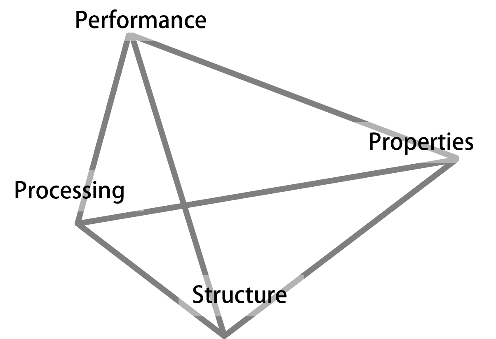
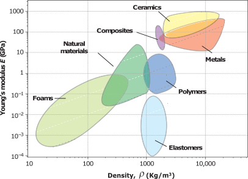
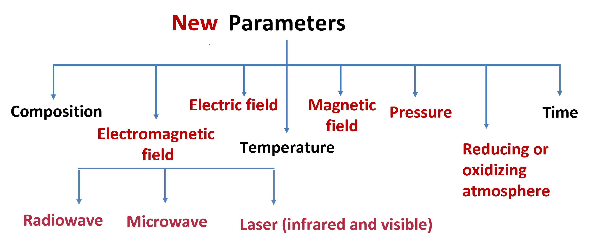
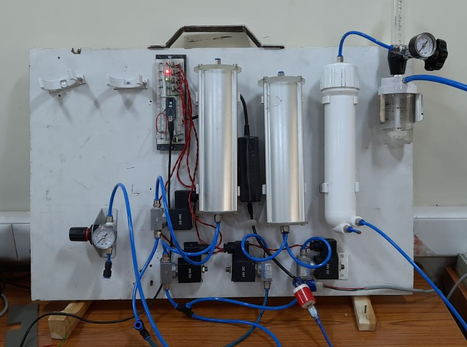
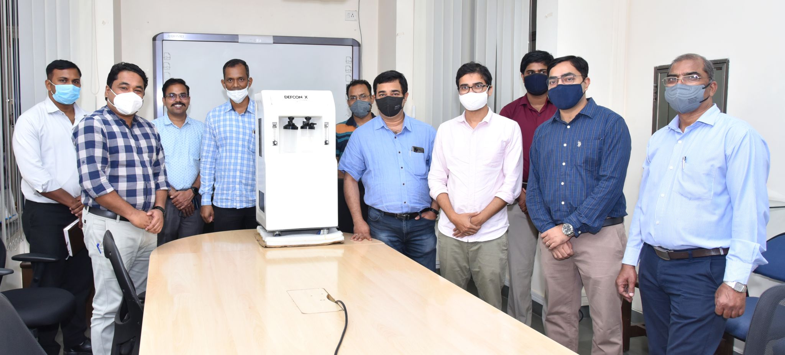
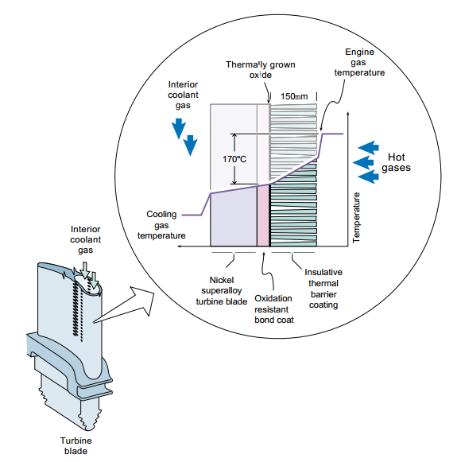
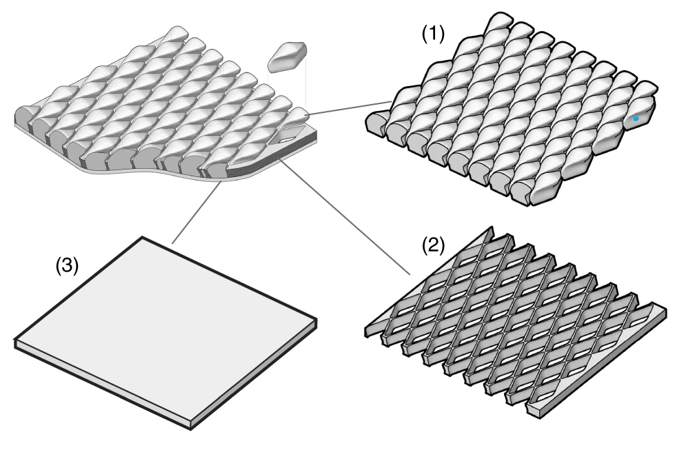
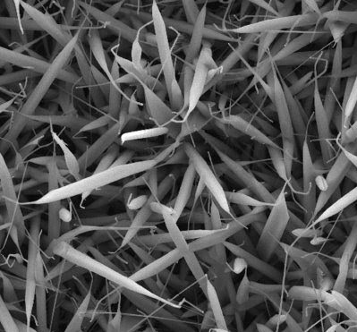
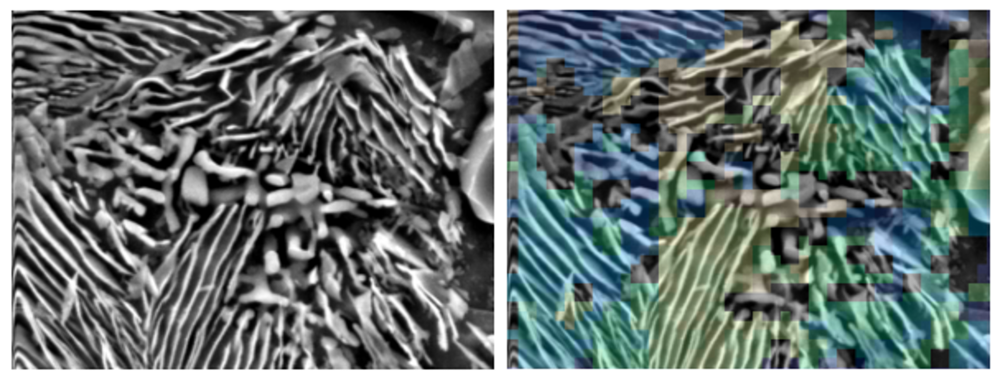

Innovation does not come from the information or knowledge; it arises from the wisdom gathered from one concept and applied to an entirely unrelated problem. Material science offers that central spot where one can work in interdisciplinary research fields such as metallurgy, mechanical, electronics, chemical, biology and computer sciences to drive the technology forward.
Welcome to Material Science
Start by doing what's necessary; then do what's possible; and suddenly you are doing the impossible Francis of Assisi
Research Map
The CeramicWorks Lab
Why did we name our lab "CeramicWorks"?
From an early age, Diwali was the most awaited festival for me. Light, color, food, festival and fireworks.
When I saw the fireworks in US on the occasion of 4th July (Independance Day), I was mesmerized: what patterns! what precision in timing! A science of alchemy which
was nothing short of magic. The bright colors in the dark sky, manifesting joy, exuberance, and celebration. In our research, we want to achieve the technological excellence
with synthesis and processing of novel materials that will capture our imagination of a vibrant future.
Ceramics is that material with infinite possibilities. Ceramics exhibit wide range of properties, because of their ability to form ionic and covalent bonds and configure themselves in varieties of crystal structures. And that's where their strength lie: they are everywhere - in the porcelain bowls, protection vests, space-shuttles, lasers, sensors, energy harvesters, solar cells, energy storage devices (batteries, super-capacitors), fuel-cells, refractories, bio-ceramics, electronics, jewelries, … you name it!

One of my teachers once described ceramics as "Ceramics are the materials of future and they will remain so forever." The reason being the permutations and combinations of possibility for coming up with new ceramic compounds is beyond imaginations and so are their applications. But, let us not limit ourselves to ceramics only; let's use all the materials available: ceramics, metals, polymers, composites, metamaterials, all of them realize a world of new material, new technologies, new possibilities.
Science

Any reliable technology stands on sound scientific foundation. Being an academic research lab, scientific understanding comes first. Our
research group focuses on three major field of researchs: Composites, Field assisted processing, and Machine learning. While appearing disconnected
at first sight, they are pieces of the same jigsaw puzzle, commonly known as
"Material's Tetrahedron". This tetrahedron emphasizes on four
independant pillars in developing technologies that we can depend on: Structure, Processing, Properties and Performance.
Crystal structure and processing technique determine the final properties of materials. But as learn from Ashby's Material selection Maps, there
are always trade-off in properties. For example, hard materials have limited ductility. To overcome this natural
challenge, we design composites of complementary materials and take advantage of field assisted processing to achieve desired
performance. Machine Leaning and FEM (finite element method,
YouTube Video) are used as tools to understand and simulate the corelations among the corners of the
Tetrahedron.
Composites

Ashby’s maps highlights the need for composite designs where materials of different properties (often contrasting) are stitched together to provide
superior properties. Properties that no single material exhibit, kind of Meta-material. Nature, being the greatest designer/architecture has done
it over and over again, giving rise to a new field of study "Bio-inspired designs."
A very simple example of a composite, human bones , is a composite of hard mineralized tissue (cortical) and soft
organic elastic fibers (collagen). The hardened matrix, formed by Calcium Hydroxylapatite, grows into an open-lattice structure that allows
blood vessels. This unique design and composition allows bones to be hard and fracture resistant while being light-weight. Additionally, it is
also functionally graded material with hard cortical bones on the surface and spongy Trabecular bone inside. An idea that has been adopted in TMT (
Thermo Mechanically Treated) steel bars, used to reinforce concrete (another example of popular composite). We design the structure of composites
made up of metal-ceramic-polymers for armor, functionally graded materials, thermal barrier coating and shock absorption applications.
Field Assisted Processing
Ceramic parts are primarily fabricated by sintering. Sintering is a process in which powders of desired material are
first compacted into desired shape and then fired to a high temperature. High temperature facilitates the diffusion
of constituent particles into a solid dense mass. Sintering, in the form of pottery, is one of the oldest invention
of human civilization. However, the process has changed little until a few decades ago when our scientific understanding
of sintering mechanisms improved. Researcher showed that pressure, rapid heating and microwave heating can not only
shorten the processing time but also improved the properties of fabricated material. The field assisted sintering (also known
as Flash Sintering) is the latest addition to the list, in which we apply electric field directly to the ceramics (at relatively
lower furnace temperature).
In the figure accentuates the role external fields play in reducing the energy consumption and time required for processing, by introducing a
new path for duffusion)create non-equilibium crystal structural changes that give rise to novel properties, even in traditional ceramics.
For a typical case of 3 mol% yttria stabilized zirconia, as we move from convention sintering to pressure assisted (hot press), Microwave (MW),
Spark plasma sintering (SPS) to flash sintering, the sintering temperature dropped from 1500 C to 800 C. The right most figure shows that as we apply
higher and higher electric field (DC voltage)the sintering temperature drops and densification rate enhances.

Our hypothesis is that these externally applied fields (shown in red)create non-equilibium crystal structural changes that give rise to novel properties, even in traditional ceramics. play in reducing the energy consumption and time required for processing . We are working to come up with a unifying theory which can explain the field-matter interactions, and to harness this understanding to thermal barrier coatins (TBC), functional ceramics, and storage devices (batteries).
Machine Learning
There isn't any active field of research that is not utilizing Machine learning (ML) or Artificial Intelligence (AI)
to unravel the emperical relationships between the causes and the effects. In material science, ML is
finding applications in understanding phase evolutions for complicated systems, predicting material properties of new
alloy compositions, ML aided molecular dynamic simulations, corelating properties to the processing history, Microstructure
analysis, to name a few (link).
In our lab, we are using Neural Networks, Random Forest and UNET along with Finite Elemental Method (FEM) simulation to
formulate the processing parameters and intelligent designs of composites. Our group is currently working on grain boundary detection
, orientation of pearlitic lamellae, intelligent phase identification, peak fitting of X-ray diffractions.
Technology
Oxygen Concentrator

During the Pandemic, we realized the big chasm between theories being taught in the classes and technologies being developed. With all scientific prowess
we struggled to save lives. There were urgent need for PPE kits, Ventilators, Oxygen concentrators, vaccines. I was involved in two of these projects:
PPE Kits and Oxygen concentrator.
The working principle of an oxygen concentrator is rather simple: zeolite under high pressure selectively absorps Nitrogen on its surface. All one needs to do is to have two
vessels containing Zeolite and use pressure swing adsorption (PSA) with the help of timed solenoid valves get pure oxygen from one vessel while the other one gets purged.
This process reverses in the second half of the cycle and it continues.

Transforming this principle into technology turned out to be a challengin task, but with the help of IIT community, specially our technical staffs at IITK: Vijay Yadav,
Om Prakash, Anil Jha and our own alumni from RevRefineries, we were able to achieve 90-93% pure oxygen at the flow rate of 10 LPM (Litre per minute). I am
sharing a post of Startup Innovation and Incubation center at
IIT Kanpur (SIIC), with Prof. Amitabha Bandyopadhyay (BSBE) and Prof. Suman Saurabh (IME).
.
Thermal Barrier Coating

The power efficiency of a turbine engine and jet engine is limited by the temperature these structures could withstand without softening.
Depending on the application, operation temperatures can exceed 700 ºC. Beyond these temperatures, refractory metal-alloys start
oxidizing and softening, resulting in quick degradation. Ceramics, on the other hand, are resistant to oxidation, corrosion and wear, as well as withstand
very higher temperatures. However, they are brittle in nature and can undergo catastrophic failure without warning. So, naturally a composite materials are developed in which
the high temperature Ni-super alloys are coated with a thin layer of ceramics, called thermal barrier coating, TBC
(relevant article).This coating serves two purposes: it protects them from oxidation, and it can sustain an appreciable temperature gradient across a relatively thin
layer of ceramic (100 μm to 2 mm) which allows the engine to operate at a much higher temperature, thus achieving a higher efficiency as per the Carnot cycle.
While the idea of TBC is simple, processing isn't. And that is because of the processing temperatures for metals and ceramics are different
and the wettibility of ceramics on metals is poor, meaning they don't want to stick to each other and result in poor interfacial strength. With microwaves (electromagnetic fields),
electric fields and magnetic fields we have seen improved interfaces and mechanical adherence and some unexpected results.
Shock absorber armors
 Taking a leaf out of Nature's design handbook, the research group Prof. Ortiz (MIT) and her collaborators have used the idea of Exoskeletons of insects, shells of invertebrates, and scales of fishes to conceptualize flexible Bio-ceramic armors. In a ground breaking finding, published in Nature Communication, Prof. Ling Li's group (VT, Blacksburgh) mimicked Chiton's scaled exterior mineralized scales arrayed on the soft underlying layer. The inter scale spacing was design to give flexibility for easy manoeuvring. We are developing composites of metal-ceramics-polymers to develop shock absorbing designs.
Gas sensor
 While factories and laboratories are essential for Technological advances, they also generate various toxic gases like NO2, CO, and Volatile Oxide Components (VOCs such as acetone and ethanol) pose a serious threat to our health and wellbeing. This situation has compelled us to think of sensors that can monitor the presence of such gases in real-time. While some sensors are already in use, we need to develop novel synthesis routes and new sensing materials, which can be then integrated together to achieve high accuracy and precision. Metal oxide semiconductors (MOS) in nanostructure form have the potential of becoming a compelling alternative to existing sensors owing to their high surface-to-volume ratio, high sensitivity towards toxic gases, and ease of synthesis, while being economically viable. We work on Hydrothermally grown oxides and doped oxides to improve their sensing properties based on morphological changes.
ML on Microstructure
 For material processing, Microstructures always play crucial role in determining the properties. So far it has been done by metallurgist with tons of experience. ML is the new expert which "quickly" learn from examples and make intelligient predictions. We are working on several ML project related to microstructures: grain boundary detection for grain size measurements, phase quantification in multiphased alloys, orientation of lamellar pearlite in hypo-eutectoid steels and X-Ray Diffraction peak fittings. As we improve our understanding, we will expand into different fields of Material Science. seen many microand
Team
Ph.D.: CU, Boulder, 2015
M. Tech.: IISc, Bangalore, 2011
B. Tech.: IIEST, Shibpur, 2009
Email: skjha@iitk.ac.in
Facebook, LinkedIn
Inter-disciplinary research and collaborative effort holds prime importance in pushing the technological front forward. I have been fortunate to have worked with stalwarts of their fields on many different research topics, including Field enhanced sintering, metal-ceramic-polymer composites, Additive manufacturing, Devices, and Machine learning.
At IIT Kanpur, our research group works on fundamental research in developing advanced material-processing techniques for energy harvesting, interfaces, functional materials, meta-materials, sensor-and-actuators, and electronic applications, while also developing technologies such as Oxygen concentrator, Thermal and Environmental barrier coatings, Armors, Bio-sensors, Devices.
It is not the intelligence but the perseverance till you find the answers that makes all the difference. If you are that person, I invite you to visit me at
Western Lab, 303-D , drop me a call (0512-259-2094) or write me an email skjha@iitk.ac.in to discuss
about the projects, ideas and opportunities at our lab.
Hard work beats talent when talent doesn't work hard.
- Tim Notke
Lab Associates
Ajay did his B Tech from CSJM, Kanpur in Metallurgy. He has a wide range of experince of having worked in physical metallurgy, machining, processing and engineering metallurgy. He is one of the most gentle and good natured person on the campus, always ready to help. We are fortunate to have him asssociated with our lab.
Dr. Lichchhavi completed her Ph.D. from IIT, Indore) where her thesis was on synthesis of metal oxide nanostructures for energy storage and biosensor applications. Her current research at IIT Kanpur involves the synthesis of different classes of nanomaterials, electrochemical applications, and device fabrications. In addition to being very dedicated in research, she is a great mentor.
Parmanand did his masters from NIT Jaipur. At IITK he am working on Flash sintering of high entropy oxides. He is also interested in the area of FEM (Comsol Multiphysics) and any relevant research area which can benefit to humankind.
Anant did his B.Tech from NIT Durgapur and joined IITK as direct PhD. He has received a MHRD-DRDO fellowhip for his ongoing work on Gas sensors in collaboration with Dr. Alok Srivastava from DMSRDE. Anant has interest in Solid state physics, DFT sumulation, and most importantly in life Philosophy.
Anupam Raj did his B.Tech from B.I.T Sindri Dhanbad and M.Tech from I.I.T (B.H.U) Varanasi both in Metallurgical Engineering. In between he worked as G.E.T in Uttam Galva Value Steel Ltd (2017-18). Presently he is pursuing Ph.D. on energy storage materials (batteries, fuel cells). He has hands-on experience with Labview software, SEM, and SolidWorks.
Pulkin completed her B.E. in Mechanical Engineering from Panjab University. As a direct PhD in IITK, she is on bio-inspired designs and Additive manufacturing for body armor. She has recently received the much coveted Prime Minister Research Fellowship (PMRF'21). She has experience in FEM simulations and CAD designs. She believes in penning down her ideas through colors and pushing her own limits.
 Raghav Mundra PhD '21
Raghav Mundra PhD '21 rmundra20@iitk.ac.in
Raghav did his M.Tech from IIT Patna and currently working on electric field assisted processing of solid-state electrolytes and Cathodes for energy application. He is also the recipient of DAAD'19 fellowship during his masters. While Raghav is very deligent and sincere in his work; he is a team builder and a delightful company to have.
Saurabh is pursuing his Ph.D at IIT Kanpur. He has a Master's degree from IIT Patna, where he worked on flash sintering of 3YSZ. His research interests lie in Advanced ceramics and their processing.
Antrakrate finished his B.Tech from NIT Andhra Pradesh and joined IITK as direct Ph.D. His research area involves synthesis of novel ceramics with permittivity and permeability suitable for microwave protection/absorption. His is also interested in lerning advances in technologies to solved the relevant problems of the society.
 Raushan Kumar M.Tech '19
rausku@iitk.ac.in
Raushan Kumar M.Tech '19
rausku@iitk.ac.in
Raushan did his B Tech from NIT Durgapur and was among the first students to have joined our group. His research work was on FEM simulation to understand deformation behavior of a metal-ceramic composite design. At IITK, he was involved with Siksha Sopan to teach school kids.
Mukesh did his B Tech from NIT, Rourkela and his reserch involves preduction of High Entropy Oxide properties with the help of Machine leaning. He is also a recepient of prestigeous DAAD'21 fellowship to work at KIT, Germany. Mukesh has deep interest in Python and Programming.
Anupam did his B.Sc in Industrial Chemistry from RKM Vidyamandira and M.Sc in Materials science from Sardar Patel University. His research interests focus on nanomaterials synthesis, advanced characterization techniques, functional ceramics, and renewable energy. In his free time, he enjoys reading fiction, watching anime, and photography.
 Sarvesh Kumar
M.Tech '21
sarveshk21@iitk.ac.in
Sarvesh Kumar
M.Tech '21
sarveshk21@iitk.ac.in
Sarvesh did his B.Tech from IIT BHU, where he worked on Bi-functional catalyst and published a jounral article. At IITK, he is working on Supercapacitor and Biogas sensors. Beyond academics, he loves to play cricket, write codes and listen to music.
Tuhina is currently doing her B.Tech from IIT-BHU and and at the same time interning in our lab. Her research interests include Materials for Energy Storage, Ceramics and 2D Materials. She is a fast learner who can do pretty much anything you ask her to: design, simulation, run experiments, review papers, ... anything.
Opportunities
To be effective and efficient, the work needs to be distributed as per skill
and expertise of students. So while PhDs are involved in deep research, we involve a lot of UG students
in various projects for us that requires the knowledge of Python, Design (CAD), Fabrication, Finite Element Analysis,
ELectronics, Arduino, Softwares, Interfaces, Machine learning and Data analysis to highlight the most important
skills of today's engineers. Currently there are about 10 UGs working with us. For the projects in fall semester please
reach out to me by 30th April, 2022. The ongoing projects are mentioned below. If you want to know more, please visit our lab.
Undergraduate (UG) Projects:
- Machine learning assisted correlation between microstructure-morphology and the properties involving image analysis
- Data acquisition system and interfacing between devices
- FEM simulations for processing and thermal analysis
- Design and prototyping Bio-medical devices
- DFT (Density funcational theory) simulations for defect analysis in doped oxides
Resources
- On research, writing, and planning.
- How to read a paper Link.
- How to write your thesis Link.
- Scientific reseachproposal Link.
- How to review a manuscript Link.
- How to write research papers Link 1 and how to plan your paper Link 2.
- Important journal links
- For breakfast, start with a healthy apetite for Nature and Science.
- Lunch heavily on what is going on in Nature materials and Advance Materials.
- Evening, keep it light with Bulletin of American Ceramic Society and MRS.
- Time to time observe "fasting" to absorb the nutrients.
- Other useful blogs from imminent researchers:
- How to choose Ph.D. topic and superviser. Link
- Quick introduction to topics in material Science.
- It would be shame if I don't share some videos on how exciting material science is. Here is my playlist and a couple of samples are shown below:
Contact
Email: skjha@iitk.ac.in +91 512 259 2094
Important: I do not write letter of recommendation (LOR) unless you have worked with me on a project.
Designed For Work
Introducing the first ever 5G enabled tablet. You've got a tablet that let's you play harder and work smarter.
Innovation does not come from the information or knowledge; it arises from the wisdom gathered from one concept and applied to an entirely unrelated problem. Material science offers that central spot where one can work in interdisciplinary research fields such as metallurgy, mechanical, electronics, chemical, biology and computer sciences to drive the technology forward.
Welcome to Material Science
Start by doing what's necessary; then do what's possible; and suddenly you are doing the impossible.
- Francis of Assisi
Research Map
Science
Any reliable technology stands on sound scientific foundation. Being an academic research lab, scientific understanding comes first. Our
research group focuses on three major field of researchs: Composites, Field assisted processing, and Machine learning. While appearing disconnected
at first sight, they are pieces of the same jigsaw puzzle, commonly known as
"Material's Tetrahedron". This tetrahedron emphasizes on four
independant pillars in developing technologies that we can depend on: Structure, Processing, Properties and Performance.
Crystal structure and processing technique determine the final properties of materials. But as learn from Ashby's Material selection Maps, there
are always trade-off in properties. For example, hard materials have limited ductility. To overcome this natural
challenge, we design composites of complementary materials and take advantage of field assisted processing to achieve desired
performance. Machine Leaning and FEM (finite element method,
YouTube Video) are used as tools to understand and simulate the corelations among the corners of the
Tetrahedron.
Composites
Ashby’s maps highlights the need for composite designs where materials of different properties (often contrasting) are stitched together to provide
superior properties. Properties that no single material exhibit, kind of Meta-material. Nature, being the greatest designer/architecture has done
it over and over again, giving rise to a new field of study "Bio-inspired designs."
A very simple example of a composite, human bones , is a composite of hard mineralized tissue (cortical) and soft
organic elastic fibers (collagen). The hardened matrix, formed by Calcium Hydroxylapatite, grows into an open-lattice structure that allows
blood vessels. This unique design and composition allows bones to be hard and fracture resistant while being light-weight. Additionally, it is
also functionally graded material with hard cortical bones on the surface and spongy Trabecular bone inside. An idea that has been adopted in TMT (
Thermo Mechanically Treated) steel bars, used to reinforce concrete (another example of popular composite). We design the structure of composites
made up of metal-ceramic-polymers for armor, functionally graded materials, thermal barrier coating and shock absorption applications.
Field Assisted Processing
Ceramic parts are primarily fabricated by sintering. Sintering is a process in which powders of desired material are
first compacted into desired shape and then fired to a high temperature. High temperature facilitates the diffusion
of constituent particles into a solid dense mass. Sintering, in the form of pottery, is one of the oldest invention
of human civilization. However, the process has changed little until a few decades ago when our scientific understanding
of sintering mechanisms improved. Researcher showed that pressure, rapid heating and microwave heating can not only
shorten the processing time but also improved the properties of fabricated material. The field assisted sintering (also known
as Flash Sintering) is the latest addition to the list, in which we apply electric field directly to the ceramics (at relatively
lower furnace temperature).
In the figure accentuates the role external fields play in reducing the energy consumption and time required for processing, by introducing a
new path for duffusion)create non-equilibium crystal structural changes that give rise to novel properties, even in traditional ceramics.
For a typical case of 3 mol% yttria stabilized zirconia, as we move from convention sintering to pressure assisted (hot press), Microwave (MW),
Spark plasma sintering (SPS) to flash sintering, the sintering temperature dropped from 1500 C to 800 C. The right most figure shows that as we apply
higher and higher electric field (DC voltage)the sintering temperature drops and densification rate enhances.
Our hypothesis is that these externally applied fields (shown in red)create non-equilibium crystal structural changes that give rise to novel properties, even in traditional ceramics. play in reducing the energy consumption and time required for processing . We are working to come up with a unifying theory which can explain the field-matter interactions, and to harness this understanding to thermal barrier coatins (TBC), functional ceramics, and storage devices (batteries).
Machine Learning
There isn't any active field of research that is not utilizing Machine learning (ML) or Artificial Intelligence (AI)
to unravel the emperical relationships between the causes and the effects. In material science, ML is
finding applications in understanding phase evolutions for complicated systems, predicting material properties of new
alloy compositions, ML aided molecular dynamic simulations, corelating properties to the processing history, Microstructure
analysis, to name a few (link).
In our lab, we are using Neural Networks, Random Forest and UNET along with Finite Elemental Method (FEM) simulation to
formulate the processing parameters and intelligent designs of composites. Our group is currently working on grain boundary detection
, orientation of pearlitic lamellae, intelligent phase identification, peak fitting of X-ray diffractions.